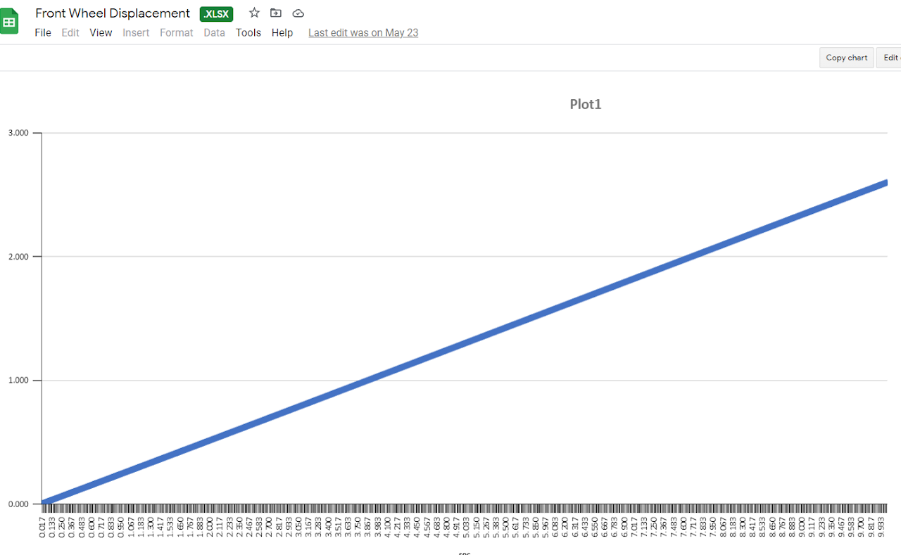
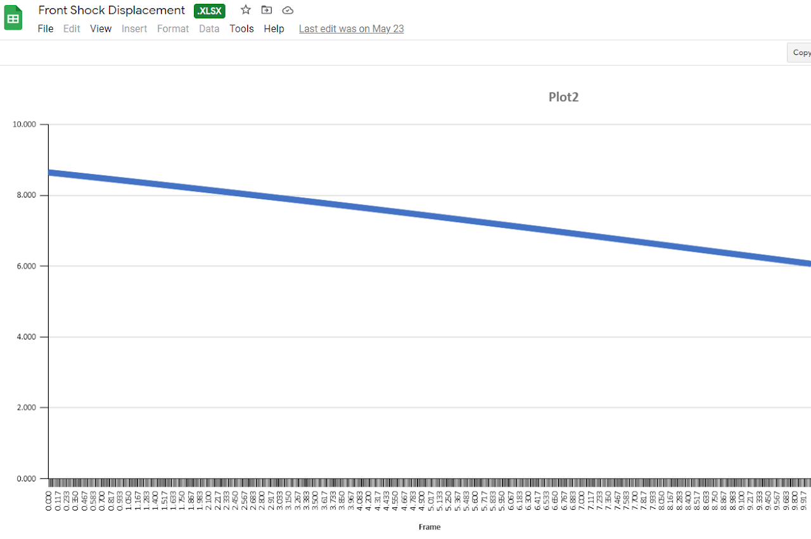

Suspension Design for Anteater Electric Racing
This suspension system was designed by a team of students for Anteater Electric Racing, a senior design project that participates in the Formula SAE Electric competition.

This year's (2021-2022) suspension was made to fix two flaws in last year's design: a wheel rate that decreased as displacement increased and a rear natural frequency that was lower than that of the front. We were able to verify that our suspension has a rising wheel rate and higher natural frequency in the rear through a SolidWorks analysis.
Above is a plot of wheel displacement with respect to time over the course of a compressive motion. Below is a plot of shock travel over the duration of the same motion.

A decreasing wheel rate is undesirable because it results in less force to
counteract a compressive force the further the shock absorbers are displaced;
this is contradictory to the purpose of a suspension system, which is to cushion
the vehicle. Wheel rate is calculated by dividing wheel displacement by shock travel,
and these two values are shown in plots with respect to time in the figure above;
the wheel rate of our new design ends up increasing throughout the plotted motion.
A higher natural frequency in the rear of the car is necessary because the back's
oscillations always lag behind the front's. If the car were to encounter an
obstacle, the rear wheels would travel over said obstacle at a later time than
the front wheels, and would need to oscillate faster in order to "catch up" with
the front. A suspension that fails to do so will have less durability and longevity.
Aside from designing the new suspension system, we began manufacturing the various components according to their dimensions in the design. Above is a jig and control arm.